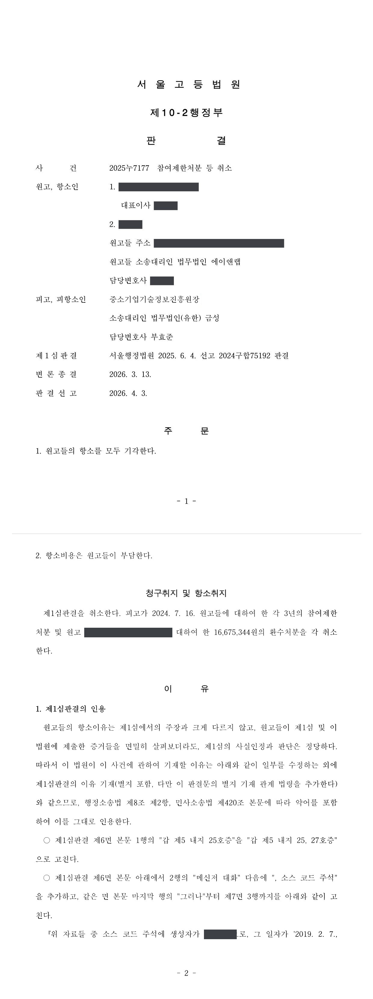

국가연구개발사업 참여제한(3년)·환수처분 취소소송 (1·2심)
서울행정법원 2024구합75192 · 서울고등법원 2025누7177 · 담당변호사 부효준
사건의 요지
최종평가에서 '완료' 판정을 받은 과제에 관하여 공익제보를 계기로 특별평가가 이루어져, 참여연구원의 실제 참여 여부와 인건비가 회사 이사의 계좌로 입금된 사정을 이유로 기업과 과제책임자에게 내려진 3년 참여제한처분과 환수처분의 처분사유 존부 및 재량권 일탈·남용 여부가 다투어진 사건입니다. 1심은 청구를 모두 받아들이지 않았고, 항소심도 같은 결론을 유지하였습니다.
사건의 주요 내용
원고 회사는 2018년 중소기업기술개발 지원사업(창업성장기술개발사업 디딤돌 창업과제)에 선정되어, 대표이사를 과제책임자로 하여 12개월 동안 총 사업비 약 1억 2,282만 원 가운데 9,800만 원을 정부지원금으로 지원받는 협약을 전문기관과 체결하였습니다. 과제는 2020년 1월 최종보고서 제출을 거쳐 2021년 7월 최종평가에서 '완료' 판정을 받았습니다.
그런데 2022년 전문기관은 공익제보를 받고 특별점검(현장점검)을 실시하여, 참여연구원 한 명이 실제로 연구개발에 참여하였는지 의심스럽고 그에게 지급된 인건비가 회사 이사의 계좌로 입금된 사정이 발견되었다는 이유로 과제를 특별평가 대상으로 판정하였습니다. 특별평가위원회는 2023년 2월 그 연구원이 2019년 1월 이후 과제에 실질적으로 참여하였다는 근거가 부족하다는 이유로 '문제있음(종료과제)' 판정을 하였고, 원고 회사의 이의신청은 받아들여지지 않았습니다.
전문기관은 제재조치위원회를 거쳐 2024년 7월 중소기업기술혁신 촉진법 제31조 제1항 제4호(출연금을 사용 용도 외의 용도에 사용하였거나 사용명세를 거짓으로 보고한 경우) 등을 근거로 원고 회사와 과제책임자인 대표이사에게 각 3년의 참여제한처분을, 원고 회사에 대하여는 2019년 1월 이후 그 연구원에게 집행된 인건비 18,825,180원에 정부지원비율을 곱한 16,675,344원의 환수처분을 하였습니다. 원고들은 각 처분의 취소를 구하는 소송을 제기하였고, 1심에서 패소한 뒤 항소하였습니다.
원고의 주장
- 해당 참여연구원은 2018년 11월부터 2019년 9월 말까지 서버 개발 등 업무를 수행하며 과제에 참여하였고, 대표이사·이사 등 동업자들과 합의하여 회사 운영 경비를 마련하기 위하여 공동계좌에 돈을 모으기로 하고 자신이 받은 인건비 일부를 입금한 것뿐이므로, 출연금을 용도 외로 사용하였거나 사용명세를 거짓으로 보고한 경우에 해당하지 않는다고 주장하였습니다.
- 공익제보자는 퇴사 과정에서 회사와 분쟁이 있어 감정이 좋지 않은 상태에서 제보한 것이고, 그 연구원과 개발 영역이 달랐으므로 사실관계를 알지 못한 채 제기한 것이어서 진술을 믿을 수 없다고 주장하였습니다. 항소심에서는 소스 코드 주석과 연구노트 등을 추가로 제출하며 2019년 이후에도 과제를 수행하였다고 다투었습니다.
- 설령 처분사유가 인정되더라도, 과제를 성실히 수행하여 목표를 달성하였고 소규모 스타트업의 동업자들이 회사 경비 마련을 위해 인건비 일부를 모아 관리한 것에 불과하며 처분이 회사의 존립에 막대한 영향을 미친다는 점에서, 비례원칙에 어긋나 재량권을 일탈·남용한 처분이라고 주장하였습니다.
부효준 변호사의 주장
- 공익제보자의 진술은 매우 구체적이고 상세하며 사무실 이전 사실, 그 연구원이 다른 업체의 홈페이지 제작 업무를 한 사실 등 객관적 증거와 일치하는 부분이 많아 믿을 수 있고, 회사와의 분쟁이 제보의 계기가 되었다는 사정만으로 신빙성을 부정할 수 없다고 반박하였습니다. 또한 과제 참여인원이 6명에 불과하고 참여율도 60~100%로 높은 소규모 회사에서 제보자가 다른 연구원의 업무 수행 여부를 몰랐을 리 없다는 점을 지적하였습니다.
- 원고들이 제출한 활동자료·이메일·메신저 대화는 대부분 2018년 11·12월의 것이고 2019년 1월 이후의 참여를 보여 주는 자료는 없으며, 참여율 100%로 등록된 연구원이 인건비 전액을 매달 이사의 계좌로 입금한 것은 '자발적인 경비 모금'이라는 설명과 맞지 않는다고 주장하였습니다. 최종평가에서 '완료' 판정을 받았다는 사정이 인건비 집행 과정의 부정을 정당화하지는 못한다는 점도 강조하였습니다.
- 처분은 중소기업기술개발 지원사업 운영요령 [별표 3]의 제재기준 안에서 이루어졌고, 참여연구원을 허위로 등록하여 정부출연금에 포함된 인건비를 지급받은 뒤 돌려받은 행위는 위법의 정도가 가볍지 않으므로 재량권 일탈·남용이 아니라고 주장하였습니다.
법원의 판단
1심 법원은 공익제보자의 진술이 구체적이고 객관적 증거와 일치한다는 이유로 그 신빙성을 인정한 반면, 원고들이 낸 자료는 2019년 1월 이후의 참여를 뒷받침하지 못하고 당사자인 연구원 본인의 진술은 믿기 어렵다고 보았습니다. 참여율 100%로 등록된 연구원이 인건비 전액을 매달 이사의 계좌에 입금한 점, 그 연구원이 법정에서는 이사 개인에게 빌려준 돈이라고 진술하여 원고들의 주장과 어긋난 점, 대표이사와 이사 사이의 메신저 대화 내용 등을 종합하여, 과제에 참여하지 않은 연구원의 인건비를 지급받은 것은 출연금의 용도 외 사용 또는 사용명세의 거짓 보고에 해당한다고 판단하였습니다.
재량권 일탈·남용에 관하여는 운영요령 [별표 3]이 재량준칙으로서 존중되어야 한다는 대법원 판례(2022. 7. 28. 선고 2022두31822 판결)를 전제로, 처분이 제재기준 안에 있고 참여연구원을 허위로 등록하여 인건비를 지급받은 뒤 돌려받은 위법의 정도가 가볍지 않으며, 원고들이 과제 성과물을 여전히 향유할 수 있는 반면 출연금이 목적과 용도에 따라 적정하게 지출되도록 할 공익이 중대하다는 이유로 비례원칙 위반을 부정하고, 원고들의 청구를 모두 받아들이지 않았습니다.
항소심은 1심 판결의 이유를 그대로 인용하면서 판단을 보충하였습니다. 항소심에서 추가된 소스 코드 주석은 사후에 변경될 수 없다거나 그 연구원이 직접 기재한 것이라는 객관적 증명이 없고, 연구노트는 2019년 1월 이후 작성분이 5회에 그치며 기록자와 점검자의 글씨체가 같아 보이는 점, 연구원이 과제기간 12개월 동안 과제 인건비 외에 별도의 급여를 받은 적이 없는 점, 연말정산 환급액까지 회사에 돌려준 뒤 반환하자는 메신저 대화가 있는 점 등을 들어 원고들의 항소를 모두 받아들이지 않았습니다.
원고 대표이사와 이사, 다른 동업자 및 참여연구원은 이 사건 과제와 관련하여 그들에게 지급된 인건비의 일부를 이사 명의의 계좌에 입금하였는데, 특히 참여연구원은 지급되는 인건비 전액을 매달 위 계좌에 입금하였다.
이에 대하여 원고들은 동업자들이 회사 운영 경비로 사용하기 위하여 자발적으로 돈을 모은 것이라고 주장하나, 과제 참여율 100%로 해당 과제에만 전념하여야 하는 연구원이 이와 관련하여 지급받은 인건비 전액을 회사의 운영비로 돌려준다는 것은 쉽게 상정하기 어려운 점, 참여연구원은 이 법원에서 위 돈을 이사 개인에게 빌려준 것이라고 진술하였는바, 이는 원고들의 주장 내용과도 다른 점, 원고 대표이사와 이사 사이의 메신저 내역을 보면 '참여연구원이 들어온 만큼 입금하는 것 같다. 5월은 입금 안 하셨네. 왜 이렇게 안 모이지' 등의 대화를 하는바, 위 대화에 의하면 참여연구원이 그 몫의 인건비를 이사에게 빌려준 것이라고 보기는 어려운 점, 참여연구원이 이사에게 입금한 돈의 반환을 요청하였다거나 원고 회사의 지분을 요구하였다는 사정도 없는 점 등을 종합하면, 원고들의 위 주장은 믿기 어렵다.
서울행정법원 2024구합75192 판결 이유 '2. 다. 처분사유의 존부 — 2) 구체적 판단 라)'
제재적 행정처분이 사회통념상 재량권의 범위를 일탈하였거나 남용하였는지 여부는 처분사유로 된 위반행위의 내용과 당해 처분행위에 의하여 달성하려는 공익목적 및 이에 따르는 제반 사정 등을 객관적으로 심리하여 공익침해의 정도와 그 처분으로 인하여 개인이 입게 될 불이익을 비교ㆍ교량하여 판단하여야 한다(대법원 2020. 1. 16. 선고 2018두56237 판결 참조). 그리고 이러한 재량권 일탈ㆍ남용에 관하여는 그 행정행위의 효력을 다투는 사람이 주장ㆍ증명책임을 부담한다(대법원 2017. 10. 12. 선고 2017두48956 판결 참조).
① 이 사건 처분은 이 사건 운영요령 [별표 3]의 제재기준 내에 있고 위 제재기준이 그 자체로 헌법과 법률에 합치되지 않는다거나 합리성이 없는 것으로 볼 수 없는 점, ② 원고들은 이 사건 과제에 참여연구원을 허위로 등록하여 정부출연금에 포함된 인건비를 지급받고 해당 인건비를 다시 돌려받았다는 점에서 그 위법의 정도가 가볍지 않은 점, ③ 원고들은 이 사건 과제 수행으로 인한 성과물을 여전히 향유할 수 있는 점 등을 고려하면, 원고들이 드는 사정을 모두 고려하더라도 이 사건 처분이 비례의 원칙을 위반하여 재량권을 일탈·남용하였다고 볼 수 없다.
서울행정법원 2024구합75192 판결 이유 '2. 라. 재량권 일탈·남용 여부' (1) 관련 법리, 2) 구체적 판단 나) 중 일부)
공익제보자가 참여연구원과 개발 영역이 달랐다고 하여도 이 사건 과제 참여인원이 6명밖에 되지 않고, 각 업무참여율이 최대 100%, 최저 60%로 그 참여율이 상당히 높고, 이 사건 과제 참여인원이 사내 메신저 등으로 업무를 공유하였던 것으로 보이는 점 등에 비추어 보면, 참여연구원이 2019년 1월 이후 재택업무를 병행하였다고 하더라도 참여인원이 서로 이 사건 과제 중 구체적으로 어떤 업무를 담당하고 있는지, 이 사건 과제 수행 기간 중 실제로 담당 업무를 수행하였는지 여부 등은 충분히 알 수 있었다고 보이는 점
서울고등법원 2025누7177 판결 이유 '1. 제1심판결의 인용' 가운데 공익제보자 진술의 신빙성에 관하여 추가한 부분
※ 판결 이유 가운데 이 사건의 판단 기준이 된 부분을 그대로 옮긴 것으로, 당사자 이름 등은 가렸습니다.
이 사건이 보여 주는 것
과제가 최종평가에서 '완료' 판정을 받고 몇 해가 지난 뒤에도 공익제보를 계기로 특별점검과 특별평가가 이루어져 참여제한과 환수처분이 내려질 수 있습니다. 이 사건에서는 참여연구원으로 등록된 사람이 실제로 과제에 참여하였는지, 그에게 지급된 인건비가 어디로 흘러갔는지가 처분사유의 핵심이 되었고, 법원은 제보자의 구체적인 진술과 계좌·메신저 기록을 원고 측의 사후 설명보다 무겁게 보았습니다.
인건비를 받은 연구원이 그 돈을 회사 경비나 다른 임원의 계좌로 다시 보내는 일은, 당사자들 사이에 합의가 있었더라도 '출연금의 용도 외 사용' 또는 '사용명세의 거짓 보고'로 평가됩니다. 참여율 100%로 등록된 연구원이 다른 업무를 한 사정도 사업계획서와 다른 수행으로 지적되었습니다. 참여연구원의 실제 참여 내역(메신저·이메일·산출물)을 과제기간 전체에 걸쳐 남겨 두어야 하고, 사후에 만든 자료는 증명력을 인정받기 어렵다는 점도 유념할 필요가 있습니다.
관련 법령중소기업기술혁신 촉진법 제10조, 제29조 제1항, 제31조 제1항 제4호, 제32조 제1항 · 중소기업기술혁신 촉진법 시행령 제19조 제1항 제3호, 제20조 제2항 [별표 2] · 중소기업기술개발 지원사업 운영요령 제29조, [별표 3] · 행정소송법 제8조 제2항, 민사소송법 제420조
관련 단어참여제한 3년출연금 환수공익제보특별평가참여연구원 허위 등록인건비 용도 외 사용사용명세 거짓 보고디딤돌 창업과제중소기업기술혁신 촉진법 제31조재량준칙재량권 일탈·남용항소심 유지
이 사건의 소개 글은 인스타그램(@lawyer.boo)에도 있습니다.
판결문 2장


비슷한 처분을 받으셨다면
국가연구개발 제재처분은 사전통지를 받은 날부터 20일 이내에 재검토 요청 의견을 내고, 처분이 있음을 안 날부터 90일 이내에 취소소송을 제기해야 합니다. 처분서나 사전통지서를 받은 날짜부터 확인해 드립니다.